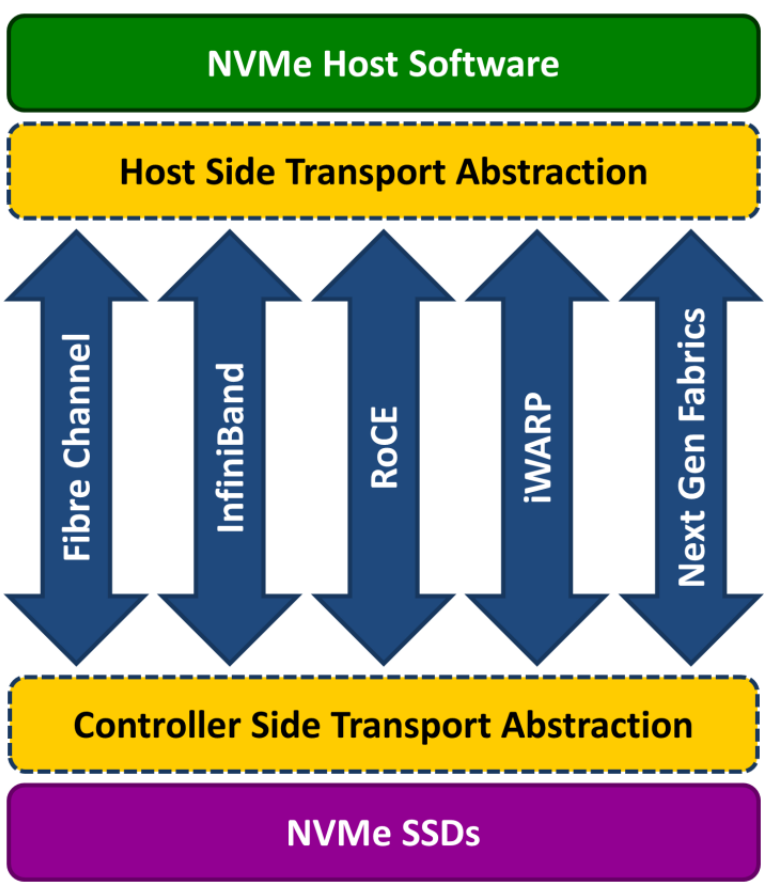

NVMe-oF,nvme_cli_initiator与tgt(spdk_tgt)之Fabrics(RDMA)流程源码分析
NVMe-oF,nvme_cli_initiator与tgt(spdk_tgt)之Fabrics(RDMA)流程源码分析
简介
NVMe over Fabrics (NVMe-oF) 是 NVMe 网络协议对以太网和光纤通道的扩展，可在存储和服务器之间提供更快、更高效的连接，并降低应用程序主机服务器的 CPU 利用率
NVM Express over Fabrics 定义了一个通用架构，支持存储网络结构上的 NVMe 块存储协议的一系列存储网络结构。 这包括启用存储系统的前端接口、横向扩展至大量 NVMe 设备以及扩展数据中心内可访问 NVMe 设备和 NVMe 子系统的距离
NVMe over Fabrics 规范的制定工作于 2014 年开始，目标是将 NVMe 扩展到以太网、光纤通道和 InfiniBand® 等结构上。 NVMe over Fabrics 旨在与任何合适的存储结构技术配合使用。 该规范于 2016 年 6 月发布
Nvmf架构图:

本文基于Linux5.10.38及RDMA, OFED驱动
KO文件及流程图
依赖nvme-core, nvme-fabrics, nvme-rdma, nvmet可选
nvme初始化及nvme_cli连接nvmet_tgt流程图:

nvme_cli与spdk_tgt参考流程图:

源码分析
nvme_cli -> spdk_tgt discover流程
gdb --args nvme discover -t rdma -a 172.17.29.217 -s 4420 -> admin_passthru
gdb --args /usr/sbin/nvme discover -t rdma -s 4420 -a 172.17.29.217
nvme.c -> main -> int main(int argc, char **argv)
handle_plugin -> int handle_plugin
plugin->commands[i] -> COMMAND_LIST -> ENTRY("discover", "Discover NVMeoF subsystems", discover_cmd)
cmd->fn(argc, argv, cmd, plugin) -> static int discover_cmd
discover(desc, argc, argv, false) -> int discover(const char *desc, int argc, char **argv, bool connect)
argconfig_parse
build_options -> static int build_options
static int do_discover(char *argstr, bool connect) -> nqn=nqn.2014-08.org.nvmexpress.discovery,transport=rdma,traddr=172.17.29.217,trsvcid=4420,hostnqn=nqn.2014-08.org.nvmexpress:uuid:e4a72828-9b7f-454f-ab8a-60b2c57e2439,hostid=cee6f16a-0183-4d00-ac0f-58
add_ctrl -> static int add_ctrl(const char *argstr) -> 控制器设备: /dev/nvme0
open(PATH_NVME_FABRICS, O_RDWR)
write(fd, argstr, len) -> 写设备, 触发内核驱动处理(nvmf_dev_write) -> nqn=nqn.2014-08.org.nvmexpress.discovery,transport=rdma,traddr=175.17.53.73,trsvcid=4420,hostnqn=nqn.2014-08.org.nvmexpress:uuid:a8dce057-b5a2-492e-8da3-9cf328f401c7,hostid=a20d3ab6-2c0a-4335-8552-305 ->
Jul 12 11:13:56 s63 kernel: nvme nvme0: new ctrl: NQN "nqn.2014-08.org.nvmexpress.discovery", addr 172.17.29.65:4420
Jul 12 11:14:01 s63 systemd: Started Session 3337 of user root.
read(fd, buf, BUF_SIZE)
nvmf_get_log_page_discovery -> static int nvmf_get_log_page_discovery
nvme_discovery_log
nvme_get_log
nvme_get_log13
remove_ctrl
nvmf_get_log_page_discovery -> static int nvmf_get_log_page_discovery -> /dev/nvme0
nvme_discovery_log -> int nvme_get_log -> nvme_get_log13 -> .opcode = nvme_admin_get_log_page -> return ioctl(fd, ioctl_cmd, cmd) -> 管理命令: nvme_admin_get_log_page = 0x02
enum nvme_admin_opcode nvme管理命令 -> linux/nvme.h
nvme_submit_admin_passthru
ioctl(fd, NVME_IOCTL_ADMIN_CMD, cmd) -> 转到内核驱动处理 -> nvme_dev_ioctl
remove_ctrl
case DISC_OK
ret = connect_ctrls(log, numrec)
case DISC_NO_LOG
print_discovery_log
connect_ctrls
转到内核处理:
...
文件系统fs:
.unlocked_ioctl = nvme_dev_ioctl
nvme_user_cmd
copy_from_user
nvme_validate_passthru_nsid
c.common.opcode = cmd.opcode;
...
nvme_cmd_allowed
status = nvme_submit_user_cmd
nvme_alloc_user_request
blk_mq_alloc_request
nvme_init_request
nvme_req(req)->flags |= NVME_REQ_USERCMD
nvme_map_user_request -> nvme_alloc_request 需要大量参数。 将其分成两个函数以减少参数数量。 第一个保留名称 nvme_alloc_request, 而第二个名为 nvme_map_user_request
bio = req->bio
ctrl = nvme_req(req)->ctrl
nvme_passthru_start
nvme_command_effects
nvme_mpath_start_freeze
nvme_start_freeze
et = nvme_execute_rq(req, false)
status = blk_execute_rq(rq, at_head)
blk_mq_insert_request -> ... -> nvme_rdma_queue_rq
blk_mq_run_hw_queue
blk_rq_is_poll -> false HCTX_TYPE_DEFAULT
wait_for_completion_io
blk_rq_unmap_user(bio)
blk_mq_free_request(req)
nvme_passthru_end(ctrl, effects, cmd, ret)
spdk_tgt处理查询日志页命令:
#0 nvmf_ctrlr_get_log_page (req=0x2000070d4560) at ctrlr.c:2517
#1 0x00000000004d2dbc in nvmf_ctrlr_process_admin_cmd (req=0x2000070d4560) at ctrlr.c:3592
#2 0x00000000004d5365 in spdk_nvmf_request_exec (req=0x2000070d4560) at ctrlr.c:4566
#3 0x000000000050b800 in nvmf_rdma_request_process (rtransport=0xd9a440, rdma_req=0x2000070d4560) at rdma.c:2239
#4 0x000000000050ea12 in nvmf_rdma_qpair_process_pending (rtransport=0xd9a440, rqpair=0xda5ec0, drain=false) at rdma.c:3276
#5 0x00000000005120ab in nvmf_rdma_poller_poll (rtransport=0xd9a440, rpoller=0xda4e70) at rdma.c:4685
#6 0x0000000000512333 in nvmf_rdma_poll_group_poll (group=0xda4da0) at rdma.c:4767
#7 0x00000000004f4d04 in nvmf_transport_poll_group_poll (group=0xda4da0) at transport.c:715
#8 0x00000000004e6a93 in nvmf_poll_group_poll (ctx=0xd29060) at nvmf.c:70
#9 0x000000000059d238 in thread_execute_poller (thread=0xd82a90, poller=0xd82e20) at thread.c:946
#10 0x000000000059d7bb in thread_poll (thread=0xd82a90, max_msgs=0, now=514611841303047) at thread.c:1072
#11 0x000000000059da5b in spdk_thread_poll (thread=0xd82a90, max_msgs=0, now=514611841303047) at thread.c:1156
#12 0x000000000055f7de in _reactor_run (reactor=0xd29140) at reactor.c:914
#13 0x000000000055f8cd in reactor_run (arg=0xd29140) at reactor.c:952
#14 0x000000000055fd4b in spdk_reactors_start () at reactor.c:1068
#15 0x000000000055c20a in spdk_app_start (opts_user=0x7fffffffde70, start_fn=0x407c15 <nvmf_tgt_started>, arg1=0x0) at app.c:808
#16 0x0000000000407d1d in main (argc=3, argv=0x7fffffffe038) at nvmf_main.c:47
nvmf_rdma_qpair_process_pending
STAILQ_FOREACH_SAFE nvmf_rdma_request_process
spdk_nvmf_request_exec
nvmf_ctrlr_process_admin_cmd
case SPDK_NVME_OPC_GET_LOG_PAGE
nvmf_ctrlr_get_log_page
spdk_nvmf_qpair_get_listen_trid
.qpair_get_listen_trid = nvmf_rdma_qpair_get_listen_trid
spdk_nvme_trid_populate_transport
nvmf_get_discovery_log_page
nvmf_generate_discovery_log
spdk_nvmf_subsystem_get_first
spdk_nvmf_subsystem_get_next
RB_NEXT(subsystem_tree, &tgt->subsystems, subsystem) -> 创建subsystem的时候将数据插入红黑树: RB_INSERT -> nvmf：使用 RB 树来跟踪 tgt 子系统 目前我们使用数组，这对于许多子系统来说计算成本很高，因为查找需要对子系统 nqns 进行 O(n) 字符串比较。 它的容量并不昂贵，因为它只是一个指针数组。 因此，将其从指针数组切换为 RB_HEAD，这样我们就可以将查找次数减少到 O(log n) 字符串比较。 请注意，我们仍然会为每个传输轮询组分配 spdk_nvmf_subsystem_poll_groups 数组，因为我们不想在 IO 路径中产生 RB_FIND 的额外成本
nvmf_transport_listener_discover
nvmf_rdma_discover
entry->trtype = SPDK_NVMF_TRTYPE_RDMA
...
entry->tsas.rdma.rdma_qptype = SPDK_NVMF_RDMA_QPTYPE_RELIABLE_CONNECTED
entry->tsas.rdma.rdma_cms = SPDK_NVMF_RDMA_CMS_RDMA_CM
nvme_cli connect 连接SPDK_TGT流程, 创建队列与发现命令类似:
nvme_cli连接:
gdb --args nvme nvme connect -t rdma -n nvme-subsystem-name -a 172.17.29.65 -s 4421
gdb --args nvme connect -t rdma -n "nqn.2022-06.io.spdk:cnode216" -a 172.17.29.217 -s 4420
main -> handle_plugin
... -> ENTRY("connect", "Connect to NVMeoF subsystem", connect_cmd)
connect_cmd -> int connect
ret = argconfig_parse(argc, argv, desc, command_line_options, &cfg
build_options
instance = add_ctrl(argstr) -> static int add_ctrl -> 添加控制器
fd = open(PATH_NVME_FABRICS, O_RDWR) -> PATH_NVME_FABRICS "/dev/nvme-fabrics"
if (write(fd, argstr, len) -> nqn=nvme-subsystem-name,transport=rdma,traddr=172.17.29.65,trsvcid=4421,hostnqn=nqn.2014-08.org.nvmexpress:uuid:3195faad-fe20-44d5-8ae4-291d29629c89,hostid=a872f1d1-daae-4da0-be86-5a36131e640b -> [root@s63 ~]# bpftrace -e 'kprobe:nvmf_dev_write{ printf("%s\n", kstack); }' -> nvmf_dev_write
len = read(fd, buf, BUF_SIZE)
case OPT_INSTANCE
内核处理
static const struct file_operations nvmf_dev_fops = {
.owner = THIS_MODULE,
.write = nvmf_dev_write,
.read = seq_read,
.open = nvmf_dev_open,
.release = nvmf_dev_release,
};
static ssize_t nvmf_dev_write
buf = memdup_user_nul(ubuf, count) -> 内存拷贝 -> duplicate memory region from user space and NUL-terminate
nvmf_create_ctrl(struct device *dev, const char *buf) -> /sys/class/nvme-fabrics -> 参考, kernel-nvmf: https://blog.csdn.net/u013565071/article/details/124190259
struct nvmf_ctrl_options *opts -> 关键数据结构体 -> nvme-fabrics：添加通用 NVMe over Fabrics 库，NVMe over Fabrics 库为传输和 nvme 核心提供接口，以处理独立于底层传输的特定于结构的命令和属性，此外，fabrics 库添加了一个杂项设备 允许实际创建结构控制器的接口，因为我们不能像 PCI 情况那样自动发现它。 nvme-cli 实用程序已得到增强，可以使用此接口来支持结构连接和发现
nvmf_parse_options
request_module("nvme-%s", opts->transport) -> nvme-rdma.ko -> 当内核发现一个需要的module不在内核中时，会调用request_module去用户空间创建进程去加载这个缺失的module, Linux内核模块的自动加载及request_module系统调用: https://blog.csdn.net/weixin_40710708/article/details/106525247
nvmf_check_required_opts
down_read(&nvmf_transports_rwsem) -> nvme-fabrics：将 nvmf_transports_mutex 转换为 rwsem 互斥体可防止在创建控制器时更改传输列表，但使用普通的旧互斥体意味着它还会序列化控制器创建。 这不必要地减慢了创建多个控制器的速度 - 例如，对于 RDMA 传输，创建控制器涉及为每个 IO 队列建立一个连接，这涉及更多的网络/软件往返，因此延迟可能会变得很严重。解决此问题的最简单方法是 将互斥量更改为 rwsem，并仅在列表发生变化时保留它以进行写入。 由于我们可以在创建控制器时读取rwsem，因此我们可以并行创建多个控制器, rw_semaphore,对于无竞争的 rwsem，计数和所有者是任务在获取 rwsem 时需要接触的唯一字段。 因此，它们被放置在彼此旁边，以增加它们共享相同缓存行的机会。 在竞争的 rwsem 中，所有者可能是结构中最常访问的字段，因为持有 osq 锁的乐观等待者将在所有者上旋转。 对于嵌入式 rwsem，包含结构中的其他热字段应远离 rwsem，以减少它们共享相同缓存行而导致缓存行弹跳问题的机会, down_read()是读者用来得到读写信号量sem时调用的，如果该信号量在被写者所持有，则对该函数的调用会导致调用者的睡眠。通过该操作，多个读者可以获得读写信号量, https://deepinout.com/linux-kernel-api/linux-kernel-api-synchronization-mechanism/linux-kernel-api-down_read.html
nvmf_lookup_transport
try_module_get -> 首先判断模块module是否处于活动状态，然后通过local_inc()宏操作将模块module的引用计数加1
up_read(&nvmf_transports_rwsem);
nvmf_check_required_opts
nvmf_check_allowed_opts -> 检查选项
ctrl = ops->create_ctrl -> .create_ctrl = nvme_rdma_create_ctrl -> static struct nvme_ctrl *nvme_rdma_create_ctrl -> 创建控制器
inet_pton_with_scope -> 将tgt地址和端口转为socket地址
nvme_rdma_existing_controller -> 比较6元组: <Host NQN, Host ID, local address, remote address, remote port, SUBSYS NQN>
nvmf_ip_options_match
INIT_DELAYED_WORK(&ctrl->reconnect_work nvme_rdma_reconnect_ctrl_work -> nvme-rdma：集中控制器设置序列，将控制器序列集中到单个例程，该例程在故障后正确清理，而不是在多个流程中具有多个外观（创建、重置、重新连接）。我们在这里还获得的一件事是理智/边界 连接回动态控制器时也会检查
INIT_WORK(&ctrl->err_work, nvme_rdma_error_recovery_work)
nvme_stop_keep_alive -> nvme-rdma：在错误恢复中不要完全停止控制器，通过在已经发生故障的控制器上调用 nvme_stop_ctrl 将等待扫描工作完成（仅通过识别超时到期时间，即 60 秒）。 当我们已经知道控制器发生故障时，这是不必要的
cancel_delayed_work_sync(&ctrl->ka_work)
flush_work
nvme_rdma_teardown_io_queues(ctrl, false);
nvme_unquiesce_io_queues(&ctrl->ctrl);
nvme_rdma_teardown_admin_queue(ctrl, false);
nvme_unquiesce_admin_queue(&ctrl->ctrl);
nvme_auth_stop(&ctrl->ctrl);
nvme_rdma_reconnect_or_remove -> 重连或移除
queue_delayed_work(nvme_wq, &ctrl->reconnect_work -> nvme_rdma_reconnect_ctrl_work
nvme_rdma_setup_ctrl
...
INIT_WORK(&ctrl->ctrl.reset_work, nvme_rdma_reset_ctrl_work)
nvme_init_ctrl -> 初始化nvme控制器, 初始化 NVMe 控制器结构。 这需要在最早的初始化期间调用，以便我们在探测期间拥有初始化的结构, nvme：将 chardev 和 sysfs 接口移至通用代码为此，我们需要添加适当的控制器初始化例程和除 PCIe 控制器列表之外的所有控制器列表，该列表保留在 pci.c 中。 请注意，当对控制器的最后一个引用被删除时，我们会删除 sysfs 设备 - 旧代码会将其保留更长时间，这没有多大意义。这需要一个新的 ->reset_ctrl 操作来实现控制器重置，并需要一个新的 ->reset_ctrl 操作来实现控制器重置。 ->write_reg32 实现子系统重置所需的操作。 现在，我们还存储 NVMe 合规版本的缓存副本以及控制器是否连接到子系统或不在通用控制器结构中的标志
INIT_LIST_HEAD(&ctrl->namespaces) -> 初始命名空间链表
init_rwsem(&ctrl->namespaces_rwsem)
INIT_WORK(&ctrl->scan_work, nvme_scan_work)
nvme_init_non_mdts_limits
nvme_scan_ns_list -> 扫描命名空间列表: https://blog.csdn.net/tiantao2012/article/details/72236113, 驱动架构分析: https://zhuanlan.zhihu.com/p/590851852, nvme_reset_work, 这个函数初始化nvme盘的admin和io队列（struct nvme_queue），同时初始化nvme盘的管理队列和请求队列对应的硬件队列描述结构blk_mq_tag_set，注意：这里的请求队列结构是struct request_queue，并不是nvme盘收发命令的admin和io队列，每个nvme逻辑盘只有一个请求队列，一个该请求队列对应多个nvme盘硬件io队列。nvme逻辑盘用struct nvme_ns结构表示，该结构包含通用盘设备结构：struct gendisk, blk_mq_tag_set结构包含一个物理nvme盘硬件队列数、队列深度、io请求及处理等信息，该结构包含物理块设备所有描述信息，是块设备软件请求队列和硬件物理存储设备队列之间的纽带，建立了系统软件层面的io请求队列和物理存储设备硬件队列的映射关系。通过该结构文件系统读写操作发送的io请求最终到达物理存储设备
INIT_WORK(&ctrl->async_event_work, nvme_async_event_work)
INIT_WORK(&ctrl->fw_act_work, nvme_fw_act_work)
INIT_WORK(&ctrl->delete_work, nvme_delete_ctrl_work)
INIT_DELAYED_WORK(&ctrl->ka_work, nvme_keep_alive_work)
INIT_DELAYED_WORK(&ctrl->failfast_work, nvme_failfast_work)
ctrl->ka_cmd.common.opcode = nvme_admin_keep_alive
ida_alloc -> idr, ida内核id机制: https://developer.aliyun.com/article/609295
device_initialize(&ctrl->ctrl_device)
nvme：将控制器引用计数切换为使用结构设备而不是为字符设备句柄分配单独的结构设备，而是将其嵌入到结构 nvme_ctrl 中并将其用于主控制器引用计数。 这消除了双重引用计数，并为我们提供了字符设备操作的自动引用。 我们暂时将 ctrl->device 保留为指针，以避免到处更改 printks，但将来我们可以研究采用与其他子系统类似的控制器结构的消息打印助手。请注意，delete_ctrl 操作始终已经有一个引用（或者通过 sysfs 由于此更改，或者因为 /dev/nvme-fabrics 节点上的每个打开文件现在输入时都有一个引用，所以我们不需要在那里执行 except_zero 变体
kobject_init
device_pm_init
ctrl->device->devt = MKDEV(MAJOR(nvme_ctrl_base_chr_devt) -> 创建设备主编号, MKDEV 用于将给定的主设备号和次设备号的值组合成 dev_t 类型的设备号, 创建/dev中的设备, alloc_chrdev_region函数，来让内核自动给我们分配设备号
dev_set_drvdata -> 函数用来设置device 的私有数据, 设置控制器指针
dev_set_name -> 设置设备名, 如: /dev/nvme2
nvme_get_ctrl
cdev_init(&ctrl->cdev, &nvme_dev_fops) -> 函数操作表为: static const struct file_operations nvme_dev_fops
cdev_device_add -> 添加字符设备
device_add
nvme_fault_inject_init
nvme_mpath_init_ctrl -> 多路径, nvme-multipath：修复 ANA 状态 nvme_init_identify 的双重初始化，因此 nvme_mpath_init 可以被多次调用，因此不得覆盖可能已初始化或正在使用的字段。 当控制器初始化时，分离出一个用于基本初始化的助手，并确保 init_identify 路径不会盲目地更改正在使用的数据结构
INIT_WORK(&ctrl->ana_work, nvme_ana_work)
nvme_auth_init_ctrl
changed = nvme_change_ctrl_state NVME_CTRL_CONNECTING
ret = nvme_rdma_setup_ctrl(ctrl, true) -> 变更: nvme-rdma：集中控制器设置序列将控制器序列集中到单个例程，该例程在故障后正确清理，而不是在多个流程中具有多个外观（创建、重置、重新连接）。 我们在这里还获得的一件事是在连接回动态控制器时进行健全性/边界检查
nvme_rdma_configure_admin_queue
nvme_rdma_alloc_queue(ctrl, 0, NVME_AQ_DEPTH) -> 队列深度32 -> ...
queue->cm_id = rdma_create_id(&init_net, nvme_rdma_cm_handler
rdma_resolve_addr(queue->cm_id, src_addr -> 触发cm事件: RDMA_CM_EVENT_ADDR_RESOLVED -> cm_error = nvme_rdma_addr_resolved(queue)
nvme_rdma_create_queue_ib -> nvme-rdma：使 nvme_rdma_[create|destroy]_queue_ib 对称，我们将引用放在销毁例程中的设备上，因此我们应该在创建例程中查找并获取引用
queue->device = nvme_rdma_find_get_device(queue->cm_id)
nvme_rdma_create_cq(ibdev, queue)
ib_alloc_cq
nvme_rdma_create_qp(queue, send_wr_factor)
init_attr.event_handler = nvme_rdma_qp_event
init_attr.sq_sig_type = IB_SIGNAL_REQ_WR
init_attr.qp_type = IB_QPT_RC
rdma_create_qp(queue->cm_id, dev->pd, &init_attr)
queue->rsp_ring = nvme_rdma_alloc_ring(ibdev, queue->queue_size
ring = kcalloc(ib_queue_size
nvme_rdma_alloc_qe
ib_dma_map_single -> 将内核虚拟地址映射为 -> DMA地址
dma_map_single
pages_per_mr = nvme_rdma_get_max_fr_pages
ib_mr_pool_init ?
NVME_RDMA_Q_TR_READY
rdma_set_service_type -> 设置服务类型, Setting Type of Service (ToS), https://github.com/ssbandjl/linux/commit/e63440d6a3134f7ae74bfb00bfc01db3efb8d3aa, nvme-rdma：为 rdma 传输添加 TOS 对于 RDMA 传输，TOS 是 IB QoS 的扩展，为客户端提供隔离不同类型数据的流量的能力。 RDMA CM 使用 rdma_set_service_type() 将其抽象为 ULP。 在内部，每个流量流都由一个连接来表示，该连接具有与普通连接一样的所有独立资源，并按服务类型进行区分。 换句话说，IP 对之间可以有多个 qp 连接，并且每个连接都支持唯一的服务类型。 TOS 用途之一是带宽管理，它允许为 QoS 类别设置带宽限制，例如 80% 带宽分配给 QoS 类别 A 的控制器，20% 分配给 QoS 类别 B 的控制器。 注意：除了 TOS 配置之外，还必须在目标（发送 RDMA 命令）和发起方的相关 HCA 上配置 QOS，以影响流量, 用法: nvme connect --tos=0 --transport=rdma --traddr=10.0.1.1 --nqn=test-nvme
rdma_resolve_route -> 触发cm事件: RDMA_CM_EVENT_ROUTE_RESOLVED -> cm_error = nvme_rdma_route_resolved(queue)
param.retry_count = 7 -> 发生错误时应在连接上重试数据传输操作的最大次数。 此设置控制发生超时时重试发送、RDMA 和原子操作的次数。 仅适用于 RDMA_PS_TCP,
param.rnr_retry_count = 7(规范中的特殊值) -> 设置连接参数, 最大重试无限次, 收到接收器未就绪 (RNR) 错误后应在连接上重试远程对等方发送操作的最大次数。 当发送请求在缓冲区已发布以接收传入数据之前到达时，会生成 RNR 错误。 仅适用于 RDMA_PS_TCP, 提供可靠、面向连接的 QP 通信，与 TCP 不同，RDMA 端口空间提供基于消息而不是流的通信
ret = rdma_connect_locked(queue->cm_id, ¶m) -> 连接服务端, 在服务端tgt, 触发cm事件: RDMA_CM_EVENT_CONNECT_REQUEST -> nvmet_rdma_queue_connect(cm_id, event)
nvmet_rdma_find_get_device(cm_id)
nline_page_count = num_pages
ndev->pd = ib_alloc_pd(ndev->device, 0) -> 分配保护域
nvmet_rdma_init_srqs(ndev) ?
queue = nvmet_rdma_alloc_queue(ndev, cm_id, event)
ret = nvmet_sq_init(&queue->nvme_sq)
nvmet_rdma_parse_cm_connect_req
INIT_WORK(&queue->release_work, nvmet_rdma_release_queue_work)
nvmet_rdma_alloc_rsps
nvmet_rdma_alloc_cmds ?
nvmet_rdma_create_queue_ib
rdma_create_qp
nvmet_rdma_post_recv
nvmet_rdma_cm_accept(cm_id, queue, &event->param.conn)
rdma_accept(cm_id, ¶m) -> 在host和tgt端触发cm事件: RDMA_CM_EVENT_ESTABLISHED
host: -> queue->cm_error = nvme_rdma_conn_established(queue)
nvme_rdma_post_recv -> nvme_rdma_recv_done
complete(&queue->cm_done) -> 唤醒等待的函数: nvme_rdma_wait_for_cm
-------------------------------------------------
tgt: -> nvmet_rdma_queue_established(queue)
nvmet_rdma_handle_command(queue, cmd)
nvmet_rdma_map_sgl
list_add_tail(&queue->queue_list, &nvmet_rdma_queue_list)
nvme_rdma_wait_for_cm(queue)
set_bit(NVME_RDMA_Q_ALLOCATED, &queue->flags)
...
ctrl->ctrl.numa_node = ibdev_to_node(ctrl->device->dev) -> 获取ib设备numa节点
T10-PI support -> nvme-rdma：添加元数据/T10-PI 支持，对于有能力的 HCA（例如 ConnectX-5/ConnectX-6），这将允许端到端保护信息直通和 NVMe over RDMA 传输验证。 元数据卸载支持是通过新的 RDMA 签名动词 API 实现的，并且为有能力的控制器启用
ctrl->max_fr_pages = nvme_rdma_get_max_fr_pages
return min_t(u32, NVME_RDMA_MAX_SEGMENTS, max_page_list_len - 1) -> 两数取其小
nvme_rdma_alloc_qe
nvme_alloc_admin_tag_set -> 参考: 驱动 | Linux | NVMe | 2. nvme_probe, https://blog.csdn.net/MissMango0820/article/details/129050219
nvme_rdma_configure_io_queues
nvme_rdma_alloc_io_queues -> ...
nvme_rdma_alloc_tag_set
nvme_rdma_start_io_queues
blk_mq_update_nr_hw_queues
nvme_change_ctrl_state
nvme_start_ctrl(&ctrl->ctrl) -> 启动nvme控制器, struct nvme_ctrl 抽象 NVMe 设备中和 NVMe 协议相关的部分
nvme_start_keep_alive -> 启动保活
nvme_queue_keep_alive_work(ctrl)
queue_delayed_work(nvme_wq, &ctrl->ka_work, ctrl->kato * HZ / 2) -> kato: nvme：添加保持活动支持定期保持活动是 NVMe over Fabrics 中的强制功能，在 PCIe 的 NVMe 1.2.1 中是可选功能。 此补丁添加了从主机定期发送的保持活动状态，以验证控制器是否仍然响应，反之亦然。 keep-alive 超时是用户定义的（使用 keep_alive_tmo 连接参数），默认为 5 秒。为了避免主机发送 keep-alive 与目标端 keep-alive 超时过期竞争的竞争条件，主机添加了一个宽限 向目标发布保持活动超时时，时间为 10 秒。如果保持活动失败（或超时），则会启动传输特定的错误恢复。目前仅连接 NVMe over Fabrics 以支持保持活动，但我们可以 一旦实际支持 PCIe 的控制器可用，即可轻松添加 PCIe 支持, nvme：清理 KATO 设置，根据 NVMe 基本规范，KATO 命令应以 KATO 间隔的一半发送，以正确考虑往返时间。 由于我们现在每个连接只发送一个 KATO 命令，因此我们可以轻松使用推荐值。 这还修复了 KATO 命令的请求超时与连接命令中的值不匹配的潜在问题，这可能会导致目标的虚假连接丢失
static void nvme_keep_alive_work
NVME_CRTL_ARRT_TBKAS , I/O completion seen, 看见IO完成 -> io完成时 nvme_complete_rq, 设置看见IO完成标记位 -> 基于流量的保持活动 (TBKAS) 允许主机和控制器在存在管理或 I/O 命令处理的情况下重新启动基于流量的保持活动计时器。 控制器对 TBKAS 位的支持在识别控制器数据结构的控制器属性中指示（参见图 275）。 如果控制器不支持基于流量的保活（TBKAS 清除为“0”），则保活功能的操作将在第 3.9.1 节中描述。 如果在保持活动超时间隔期间未处理管理命令或 I/O 命令而保持已建立的连接，则会出现基于流量的保持活动超时。 如果在保持活动超时间隔内处理管理命令或 I/O 命令，则在保持活动定时器到期时，应重新启动保持活动定时器。 如果在保持活动超时间隔内没有向控制器提交管理命令或 I/O 命令（如第 3.4.4 节中定义），则控制器可能会认为发生了保持活动超时。 如果管理命令或 I/O 命令在保持活动超时间隔内传输到控制器，则在保持活动定时器到期时，控制器应重新启动保持活动定时器。 如果主机在保持活动超时间隔内未收到任何管理命令或任何 I/O 命令的完成，则主机可能会认为发生了基于流量的保持活动超时。 如果管理命令或 I/O 命令在保持活动超时间隔内完成，则在保持活动定时器到期时，主机应重新启动保持活动定时器。 主机应在保持活动超时的一半时检查任何管理命令和 I/O 命令的命令完成队列条目，考虑到传输往返时间、传输延迟、命令处理时间和保持活动计时器粒度。 为了防止控制器检测到保持活动超时，如果在保持活动超时间隔的一半时间内没有管理命令和 I/O 命令发送到控制器，主机应发送保持活动命令,https://www.spinics.net/lists/stable-commits/msg304229.html, Keep Alive命令（参考第5.27.1.12节）和相关功能被主机用来确定控制器是否在运行，并被控制器用来确定主机是否在运行。当主机和控制器都可以访问并能够发出或处理命令时，它们就可以运行。控制器在Identify Controller data structure 中的KAS字段中指出Keep Alive Timer的粒度（参考Figure 275
blk_mq_alloc_request(ctrl->admin_q, nvme_req_op(&ctrl->ka_cmd) -> 分配KA管理命令
nvme_init_request(rq, &ctrl->ka_cmd)
blk_execute_rq_nowait(rq, false) -> 在队列尾部插入IO
nvme_enable_aen(ctrl) -> nvme：启用aen，无论是否存在I/O队列AEN通常与I/O队列的存在无关，因此无论是否存在都启用它们。 请注意，唯一的例外是发现控制器不支持任何请求的 AEN，并且 nvme_enable_aen 将尊重该请求并返回，因此无论如何启用它仍然是安全的。请注意，即使在初始命名空间扫描之前启用 AEN 也是安全的，因为我们在 工作队列上下文
nvme_queue_scan -> 参考: https://blog.csdn.net/tiantao2012/article/details/72236113
nvme_unquiesce_io_queues(ctrl)
nvme_mpath_update(ctrl) -> 更新nvme多路径, 从 nvme_init_identify() 调用的 nvme_mpath_init_identify() 从 ctrl 获取新的 ANA 日志。 这对于现有命名空间以及 ctrl 启动后可能发现的那些 scan_work 拥有最新的路径状态至关重要
nvme_parse_ana_log nvme_update_ana_state
nvme_change_uevent(ctrl, "NVME_EVENT=connected")
dev_info nvmf_ctrl_subsysnqn -> 打印info级别的调试信息
module_put(ops->module) -> module_put函数功能描述：该函数的功能是将一个特定模块module的引用计数减一，这样当一个模块的引用计数因为不为0而不能从内核中卸载时，可以调用此函数一次或多次，实现对模块计数的清零，从而实现模块卸载
...
pr_info("no handler found for transport %s.\n"
seq_file->private = ctrl
spdk_tgt启动流程, 通过CM与host端建立RDMA连接
gdb调试spdk_nvme_tgt
nvmf_main.c:47
spdk_app_opts_init -> opts=0x7fffffffdee0, opts_size=224
#define SET_FIELD(field, value) -> 临时定义宏
SET_FIELD(enable_coredump, true) -> 设置默认选项
...
SET_FIELD(disable_signal_handlers, false)
gdb -> p opts
spdk_app_parse_args -> 解析参数
spdk_app_start(&opts, nvmf_tgt_started, NULL) -> spdk_app_start(struct spdk_app_opts *opts_user -> g_start_fn = start_fn
app_copy_opts
spdk_log_set_print_level
app_setup_env
calculate_mempool_size
spdk_log_open
spdk_reactors_init(size_t msg_mempool_size) -> 初始化 reactor, spdk线程模型: https://zhuanlan.zhihu.com/p/560861776
g_spdk_event_mempool = spdk_mempool_create(mempool_name
rte_mempool_create
spdk_env_get_last_core
SPDK_ENV_FOREACH_CORE -> 遍历cpu
posix_memalign
g_core_infos = calloc
spdk_thread_lib_init_ext(reactor_thread_op, reactor_thread_op_supported -> g_thread_op_fn -> g_thread_op_supported_fn -> 初始化线程库。 必须在分配任何线程之前调用一次 thread_op_fn 和 thread_op_type_supported_fn 必须同时指定或不指定 -> nvmeof_tgt: https://blog.csdn.net/weixin_60043341/article/details/126505064, 将g_new_thread_fn赋值为reactor_thread_op，从而实现后续以spdk_create_thread创建的逻辑层面的thread都和具体的reactor相关联, 使用SPDK lib搭建自己的NVMe-oF Target应用: https://mp.weixin.qq.com/s/niKa3wnlRuz4LJ47mJBJvQ
_thread_lib_init
g_spdk_msg_mempool = spdk_mempool_create -> 创建消息池msgpool
SPDK_ENV_FOREACH_CORE reactor_construct -> 构造reactor
reactor->events = spdk_ring_create
if (reactor_interrupt_init(reactor) -> 默认中断模式 -> 中断：在thd和reactor中应用fd_group，每个reactor和每个线程分配一个fd组。 同时，每个线程被视为一个中断源，注册到其相应的反应器中。 reacotr 的egrp函数是唯一等待事件的阻塞点
spdk_fd_group_create
reactor->resched_fd = eventfd
SPDK_FD_GROUP_ADD(reactor->fgrp, reactor->resched_fd, reactor_schedule_thread_event
epoll_ctl(epfd
SPDK_FD_GROUP_ADD reactor->events_fd event_queue_run_batch
spdk_interrupt_mode_is_enabled
reactor = spdk_reactor_get(current_core)
g_scheduling_reactor = reactor
spdk_cpuset_set_cpu
spdk_thread_create("app_thread", &tmp_cpumask) -> 创建一个新的 SPDK 线程对象。 请注意，通过 spdk_thread_create() 创建的第一个线程将被指定为应用程序线程。 其他 SPDK 库可能会限制某些 API 只能在此应用程序线程的上下文中调用
spdk_interrupt_mode_is_enabled -> 默认禁用中断
g_thread_op_fn(thread, SPDK_THREAD_OP_NEW) -> reactor_thread_op
_reactor_schedule_thread
spdk_cpuset_zero
spdk_cpuset_set_cpu
spdk_cpuset_xor -> 异或, eactor：避免在intr中将线程调度到reactor，目前，spdk_thread无法在处于中断模式的reactor上执行，但spdk_thread的中断未启用。 所以避免调度 spdk_thread 就可以了
dst->cpus[i] ^= src->cpus[i]
spdk_cpuset_copy -> copy dst <- src
spdk_cpuset_and -> dst->cpus[i] &= src->cpus[i]
spdk_cpuset_get_cpu(cpumask, core) -> return (set->cpus[cpu / 8] >> (cpu % 8)) & 1U -> 位运算
evt = spdk_event_allocate(core, _schedule_thread, lw_thread, NULL)
event = spdk_mempool_get(g_spdk_event_mempool)
event->fn = fn
lw_thread->tsc_start = spdk_get_ticks() -> lib/event: 将线程的运行时间添加到framework_get_reactors RPC的输出中，收集每个SPDK线程的运行时间并将其添加到framework_get_reactors RPC的输出中
spdk_event_call(evt)
rc = spdk_ring_enqueue(reactor->events, (void **)&event, 1, NULL) -> 消息事件入队
rc = write(reactor->events_fd, ¬ify, sizeof(notify)) -> 默认不通知
spdk_thread_send_msg(spdk_thread_get_app_thread(), bootstrap_fn, NULL)
msg->fn = fn
spdk_ring_enqueue(thread->messages, (void **)&msg, 1, NULL) -> 消息其实是通过spdk_ring_enqueue()放入了ring-buffer中的。在后续的poller挂在的函数中对ring-buffer中的消息进行处理, 代码分析: https://zhuanlan.zhihu.com/p/423779832
thread_send_msg_notification(thread)
spdk_reactors_start
reactor_run(reactor)
while (1)
_reactor_run(reactor)
event_queue_run_batch(reactor)
count = spdk_ring_dequeue(reactor->events, events, SPDK_EVENT_BATCH_SIZE)
event->fn(event->arg1, event->arg2) -> _schedule_thread(void *arg1, void *arg2)
spdk_thread_poll -> thread_poll
msg_queue_run_batch -> msg->fn(msg->arg) -> bootstrap_fn
_nvmf_transport_create_done -> ctx->cb_fn -> _ctx->ops->create -> .create = nvmf_rdma_create,
nvmf_rdma_create
rtransport->event_channel = rdma_create_event_channel()
rtransport->data_wr_pool = spdk_mempool_create
rdma_get_devices
create_ib_device
ibv_query_device
nvmf_rdma_is_rxe_device
TAILQ_INSERT_TAIL(&rtransport->devices, device, link)
ibv_alloc_pd
spdk_rdma_create_mem_map
"Create IB device xxx"
rc = generate_poll_fds(rtransport);
nvmf_rdma_accept
spdk_env_thread_wait_all()
nvme落盘io流程, iopath
static const struct blk_mq_ops nvme_rdma_mq_ops = {
.queue_rq = nvme_rdma_queue_rq,
.complete = nvme_rdma_complete_rq,
.init_request = nvme_rdma_init_request,
.exit_request = nvme_rdma_exit_request,
.init_hctx = nvme_rdma_init_hctx,
.timeout = nvme_rdma_timeout,
.map_queues = nvme_rdma_map_queues,
.poll = nvme_rdma_poll,
};
static blk_status_t nvme_rdma_queue_rq
nvme_check_ready -> 对于我们无法发送到设备的状态，默认操作是使其忙碌并在控制器状态恢复后重试。 但是，如果控制器正在删除，或者任何内容被标记为快速故障或 nvme 多路径，则会立即失败。 注意：用于初始化控制器的命令将被标记为快速故障。 注意：nvme cli/ioctl 命令被标记为故障快速
req->sqe.dma = ib_dma_map_single(dev, req->sqe.data
ib_dma_mapping_error
ib_dma_sync_single_for_cpu
nvme_setup_cmd
nvme_start_request(rq)
nvme_rdma_map_data
ib_dma_sync_single_for_device
nvme_rdma_post_send <- drivers/nvme/host/rdma.c
ib_post_send
参考
NVME规范2.0: https://nvmexpress.org/specifications/#content-13132
Linux内核5.10.38: https://github.com/ssbandjl/linux/blob/v5.10/readme_linux_with_git_log
Nvme_Cli用户态项目: https://github.com/ssbandjl/nvme-cli/blob/v1.8.1_xb/readme
SPDK项目: https://github.com/ssbandjl/spdk/blob/master/readme
晓兵
博客: https://logread.cn | https://blog.csdn.net/ssbandjl | https://cloud.tencent.com/developer/user/5060293/articles
weixin: ssbandjl
公众号: 云原生云

- 原文作者：晓兵
- 原文链接：https://logread.cn/post/linux/nvmf/
- 版权声明：本作品采用知识共享署名-非商业性使用-禁止演绎 4.0 国际许可协议进行许可，非商业转载请注明出处（作者，原文链接），商业转载请联系作者获得授权。